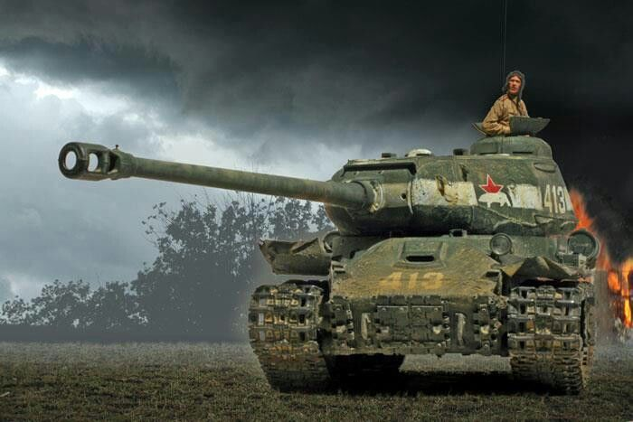
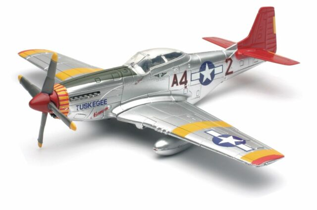

Frontline Veteran is a world war 2 themed model Shop. We provide the WW2 military models with the best quality. We Support not only ordering factory products but also customized requests. We are experts in building models and dioramas. Feel free to order if you are a fan of in WW2 military models. Contact Deming for more information (demingz1@gmail.com)
|
Panzerkampfwagen VI Tiger Ausf. E. (Summer 1943)
19.99USD Tiger I, a German heavy tank of World War II, operated from 1942 in Africa and Europe, usually in independent heavy tank battalions. |
IS 2 1944 "For the Motherland!"
 21.99USD IS-2 model 1944, the 1944 improvement with D25-T 122 mm gun, with faster-loading drop breech and new fire control. |
Char B1 bis "Vive la France" (1940)
17.99USD The Char B1 was a French heavy tank manufactured before World War II. The Char B1 was a specialised break-through vehicle, originally conceived as a self-propelled gun with a 75 mm howitzer in the hull |
|---|---|---|
|
Cromwell Medium Tank (Operation Market Garden)
25.99USD The Cromwell tank, officially Tank, Cruiser, Mk VIII, Cromwell (A27M), was one of the series of cruiser tanks fielded by Britain in the Second World War. |
|
Messerschmitt Bf 109 E
35.99USD The Messerschmitt Bf 109 is a German World War II fighter aircraft that was, along with the Focke-Wulf Fw 190, the backbone of the Luftwaffe's fighter force. |
Lavochkin La-5
37.99USD The Lavochkin La-5 (Лавочкин Ла-5) was a Soviet fighter aircraft of World War II. It was a development and refinement of the LaGG-3, replacing the earlier model's inline engine with the much more powerful Shvetsov ASh-82 radial engine. |
North American P-51 Mustang
 31.99USD The North American Aviation P-51 Mustang is an American long-range, single-seat fighter and fighter-bomber used during World War II and the Korean War, among other conflicts. |
|---|
|
Battleship Bismarck
55.99USD Bismarck was the first of two Bismarck-class battleships built for Nazi Germany's Kriegsmarine. Named after Chancellor Otto von Bismarck, the ship was laid down at the Blohm & Voss shipyard in Hamburg in July 1936 and launched in February 1939. |
USS Atlanta (CL-51)
35.99USD USS Atlanta (CL-51) of the United States Navy was the lead ship of the Atlanta class of eight light cruisers. She was the third Navy ship named after the city of Atlanta, Georgia. |
Soviet Cruiser Molotov
35.99USD Molotov was a Project 26bis Kirov-class cruiser of the Soviet Navy that served during World War II and into the Cold War. She supported Soviet troops during the Siege of Sevastopol at the end of January 1943. |
|---|